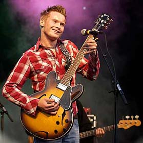
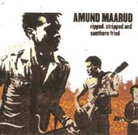

Официальный пресс-релиз.
Блюз в Норвегии? Это - серьезно. В этой маленькой стране насчитывается около 70 чисто блюзовых клубов, круглый год с гастролями по Норвегии колесят американские блюзовые звезды, собираясь ежегодно более чем на 20-ти фестивалях. В стране есть блюзовый союз и толстый блюзовый журнал. А в небольшом городе Нутодден находится Европейский Блюзовый Центр, и проходит самый крупный в Европе блюзовый фестиваль.
В такой благодатной для блюза стране растут очень талантливые музыканты мирового уровня, стиль которых чрезвычайно богат и разнообразен благодаря тому, что они могут слышать на концертах. Самый горячо любимый публикой из них - Видар Бюск (Vidar Busk) - год назад выступал с огромным успехом в Москве, оставив множество истовых поклонников в среде наших музыкантов и просто слушателей. Основные ожидания молодого норвежского блюза сегодня связаны с именем гитариста Амунда Морюда (Amund Maarud), который в мае выступит в Москве и Владимире с клубными концертами.
Амунд взял в руки свою первую гитару в 6 лет, после чего стало ясно, что он посвятит свою жизнь музыке. Вместе со своим братом-барабанщиком Хенриком, который младше Амунда на два года, они собрали свою первую блюзовую группу Maarudkara. На бас-гитаре вместе с блюзовыми братьями, которым тогда было только 14 и 16 лет, играл их отец. В то же время Maarudkara выпустила первый альбом "First blues", получила серию все-норвежских призов из серии "Талант года", и прославилась благодаря серии телевизионных выступлений, что привело к огромному количеству клубных и фестивальных концертов отца Терье Морюда и юных братьев.
Сегодня с уже возмужавшими Морюдами на басу 50-летний американец Bill Troiani, игравший на родине с известными блюзменами, и перебравшийся в Норвегию несколько лет назад. Не так давно в группе появился второй гитарист Haakon Hoye, что сделало ее звучание еще более интересным. Сегодня Amund Maarud Band дает до 20 концертов в месяц, а фестивали и клубы выстраиваются в очередь с тем, чтобы вписать это название в свое расписание. Последнюю пару лет группа является хоум-бэндом самого крупного норвежского блюзового клуба Muddy Waters в Осло. А 2003 год стал для них очень насыщенным на события. Два месяца назад группа вернулась с гастролей из Мемфиса, которые проходили в рамках международного конкурса молодых блюзовых исполнителей "International Blues Challenge", куда группу отправили в качестве первого норвежского делегата. После этого в марте вышел новый диск группы "Ripped, Stripped & Southern Fried".
Большую часть музыки и текстов в классических блюзовых по форме композициях пишет сам Амунд.
"Я вырос на хуторе, играя блюз по субботним вечерам и работая на тракторе по воскресеньям. И эта жизнь на природе чем-то сближала меня с американцами 30-х годов. Поэтому было немного глупо подражать классическим блюзовым музыкантам, ибо я сам жил такой жизнью. Мне кажется, блюз может быть во всем, даже когда просыпаешься утром и не находишь молока в холодильнике. Хотя, конечно, в моих блюзовых текстах женщины всегда играют главную роль".
Blues.ru и norge.ru рады тому, что дают нашим меломанам возможность послушать любимую музыку в самом живом ее проявлении.
Концерты пройдут:

Ah'W Baby (789k)
 (Walter Jacobs)
(Walter Jacobs)
Heart On The Rocks (880k)
 (Amund Maarud)
(Amund Maarud)
Ain't No Big Deal On You (980k)
 (M. Camphell)
(M. Camphell)
She Loves Me, She Loves Me Not (1195k)
 (Amund Maarud & Per J. Tobro / RC Finnigan)
(Amund Maarud & Per J. Tobro / RC Finnigan)
Let's Get High (747k)
 (Roscoe Gordon)
(Roscoe Gordon)